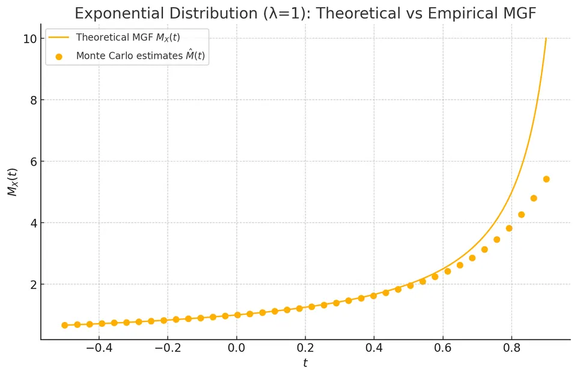
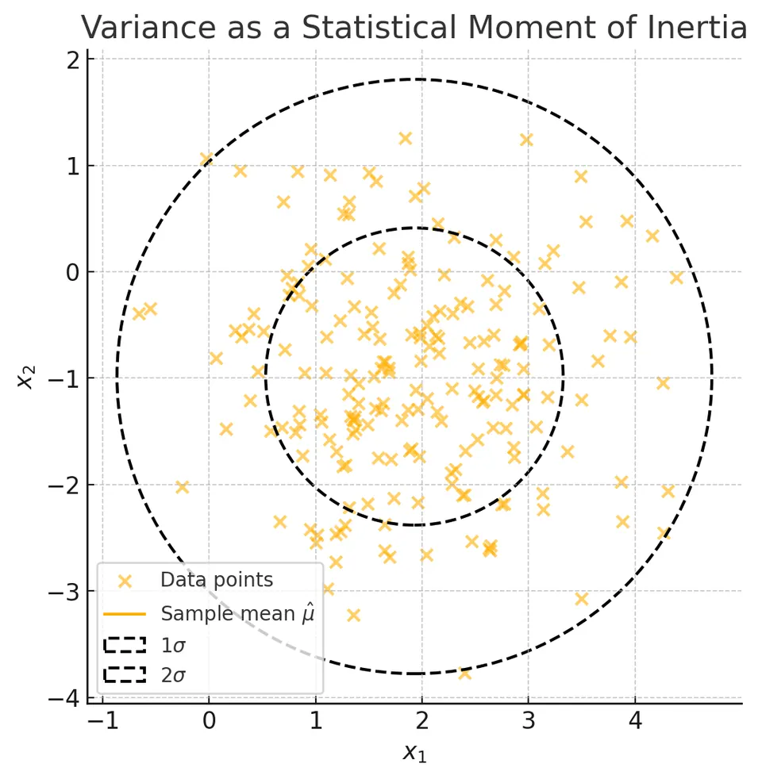
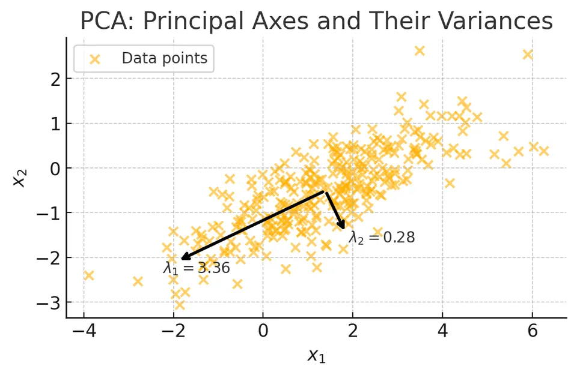

Moments, Moment-Generating Functions, and Their Connections
A statistical moment is a probability-weighted average of a power of a value or deviation. The chosen reference point matters. Squared distance from zero gives a raw second moment; squared distance from the mean gives variance. Higher powers put progressively more weight on observations far from that reference point.
The word also appears in mechanics, where mass rather than probability supplies the weight. The analogy helps explain the geometry of spread, but the direction of measurement must be kept straight: variance along a direction and rotational inertia about that direction use different distances.
Raw, central, and standardized moments
For a real-valued random variable with mean $\mu=E[X]$, the $n$-th raw moment is $\mu'_n=E[X^n]$. The corresponding central moment is
$$ \mu_n=E[(X-\mu)^n]. $$
For these to be ordinary finite moments, the relevant absolute power must be integrable. A distribution can have a finite mean but an infinite variance, so existence should not be assumed from the notation alone.
The first central moment is zero because $E[X-\mu]=0$. The second is the variance, $\sigma^2=E[(X-\mu)^2]$, whose square root is the standard deviation. Expanding the square gives the useful identity
$$ \mathrm{Var}(X)=E[X^2]-(E[X])^2. $$
For example, if $X$ takes 0 and 2 with equal probability, $E[X]=1$ and $E[X^2]=2$, while the variance is 1. The second raw moment and variance are different because they measure squared distance from different reference points.
Centering removes location but does not remove units or scale. With $0<\sigma^2<\infty$, standardized higher moments include
$$ \text{skewness}=\frac{\mu_3}{\sigma^3},\qquad \text{kurtosis}=\frac{\mu_4}{\sigma^4}. $$
The third power retains a sign and summarizes asymmetry. The fourth power emphasizes large deviations in either direction. Normal kurtosis is 3; excess kurtosis subtracts 3. A high kurtosis is not simply a statement about a tall central peak, and zero skewness alone does not prove symmetry or normality.
The moment-generating function
The moment-generating function is
$$ M_X(t)=E[e^{tX}] $$
where that expectation is finite. The familiar moment-generation and uniqueness results require finiteness in an open interval containing zero. Merely observing $M_X(0)=1$ does not establish that condition, since $e^{0X}=1$ for every random variable.
Expanding the exponential and, under that condition, exchanging expectation with its series gives
$$ M_X(t)=1+\mu'_1t+\frac{\mu'_2}{2!}t^2+\cdots. $$
Differentiation isolates a coefficient: after taking $n$ derivatives and setting $t=0$, terms with higher powers vanish and the factorial cancels. Thus
$$ \mu'_n=M_X^{(n)}(0)=\frac{d^nM_X(t)}{dt^n}\Bigg|_{t=0}. $$
In particular,
$$ E[X]=M_X^{(1)}(0), $$
$$ \mathrm{Var}(X)=M_X^{(2)}(0)-\bigl(M_X^{(1)}(0)\bigr)^2. $$
For an exponential variable with rate 1, $M_X(t)=1/(1-t)$ for $t<1$. Its first two derivatives at zero are 1 and 2, yielding mean 1 and variance $2-1^2=1$. Differentiating can therefore replace repeated direct integrations.
An MGF finite near zero uniquely determines the distribution. Conversely, having all positive integer power moments does not guarantee such an MGF: the log-normal family has finite power moments but $E[e^{tX}]=\infty$ for $t>0$.
Estimating an MGF by simulation
For independent draws $X_1,\ldots,X_N$, estimate an existing MGF by
$$ \widehat M_X(t)=\frac1N\sum_{i=1}^N e^{tX_i}. $$

The solid curve is $M_X(t)=\lambda/(\lambda-t)$ for an exponential rate $\lambda=1$. The plotted estimates use $N=10{,}000$ simulated draws. At $t=0$, every term is 1, so the estimate is exactly 1; nearby derivatives relate to the raw moments.
For each $t<1$, the estimate has finite expectation equal to $M_X(t)$. Its variance requires the stronger condition that $E[e^{2tX}]$ be finite:
$$ \mathrm{Var}(e^{tX})=M_X(2t)-M_X(t)^2, \qquad t<\tfrac12. $$
For $1/2\le t<1$, the MGF itself is finite but this estimator has infinite variance. A law-of-large-numbers argument still applies to its finite mean, but ordinary finite-variance standard errors do not. Rare large draws can dominate estimates near the boundary. At $t\ge1$, the expectation itself diverges, even though a finite simulated average always produces some finite number.
Mechanical moments and the choice of reference
The physical moment of inertia about an axis weights squared perpendicular distance from that axis by mass:
$$ I=\int r^2\,dm=\int r^2\rho(\mathbf r)\,dV. $$
Here $\rho$ is mass density and $r$ is the perpendicular distance; for point masses the expression is $I=\sum_i m_i r_i^2$. Dividing by total mass converts the weights to fractions summing to 1, analogous to probability weights.
On a number line, the weighted squared deviation from a reference $a$ satisfies
$$ E[(X-a)^2]=\mathrm{Var}(X)+(\mu-a)^2. $$
The cross-term vanishes because $E[X-\mu]=0$. The mean therefore minimizes expected squared distance, just as centering at the center of mass minimizes the corresponding reference-point contribution. Physical inertia has units of mass times squared distance; normalized statistical second moments have squared data units.
Radial spread in two dimensions

The illustration uses 200 synthetic bivariate-normal observations centered near $(2,-1)$, with approximately unit variance in each coordinate. The cross marks the sample mean $\hat\mu$. The dashed circles have radii $\sigma_r$ and $2\sigma_r$, using the root-mean-square radial distance
$$ \sigma_r=\sqrt{\frac1n\sum_{i=1}^n\|X_i-\hat\mu\|^2}. $$
This quantity combines squared deviations in both coordinates. In the isotropic unit-variance population, the squared radius has expectation $1+1=2$, giving a population RMS radius $\sqrt2$. The expected squared radius is the trace of the covariance matrix, not one coordinate's variance.
For that particular bivariate normal model, a circle of radius $\sqrt2$ contains probability $1-e^{-1}\approx63.2\%$. It does not inherit the one-dimensional 68% rule. The sample mean and sample radial estimate make the displayed fraction vary further. Squared radial spread is a second moment around the center, while an inertia about an axis uses only the perpendicular part of that spread.
PCA and principal axes: the precise connection
For a vector of variables, the covariance matrix has entries
$$ \Sigma_{jk}=E[(X_j-\mu_j)(X_k-\mu_k)]. $$
The variance of the projection along a unit vector $u$ is $u^\top\Sigma u$. PCA chooses eigenvectors of $\Sigma$ to find orthogonal directions of maximal successive projected variance. Rotating into those coordinates diagonalizes the covariance; it removes cross-covariance, not necessarily every form of dependence.

The illustration uses 300 correlated two-dimensional normal observations. The arrows originate at the sample mean and point along the covariance eigenvectors. The labeled covariance eigenvalues are approximately $\lambda_1=3.36$ and $\lambda_2=0.28$. The first direction captures most of the projected variance; the other captures much less.
For a centered physical mass distribution with covariance $\Sigma$ after normalizing mass, the inertia tensor is instead
$$ J=\mathrm{tr}(\Sigma)I-\Sigma, $$
where $I$ is the identity matrix. Its eigenvectors are the same, but its eigenvalues are $\mathrm{tr}(\Sigma)-\lambda_j$. An axis with large variance along it therefore has smaller inertia about it, because rotation uses perpendicular distances. In the two-dimensional example, the in-plane axis with projected variance 3.36 has normalized inertia about that axis of approximately 0.28. The common eigenvectors justify the principal-axis analogy; equating the largest projected variance with the largest axial inertia would reverse the comparison.
Historical context and estimation
Nineteenth-century probability theory, including work associated with Pafnuty Chebyshev, used moments to bound probabilities and study averages. For a finite-variance variable, Chebyshev's inequality bounds the probability beyond $k$ standard deviations by $1/k^2$ without assuming normality. This differs from the much more specific normal empirical-rule probabilities.
Karl Pearson's 1894 work made the method of moments an important tool for fitting probability models: equate theoretical moments to corresponding sample averages and solve for the parameters. For a normal model, matching the first two raw moments estimates $\mu$ by $\bar x$ and $\sigma^2$ by $n^{-1}\sum_i(x_i-\bar x)^2$. The divisor $n$ follows from matching empirical moments; it is distinct from the $n-1$ correction used for an unbiased variance estimator under IID assumptions.
The common thread is a weighted average of powered values. Always identify the reference point, the power, the weights, and the existence assumptions before using the resulting moment as a description, estimator, or geometric analogy.
Practice: Exercises with worked solutions